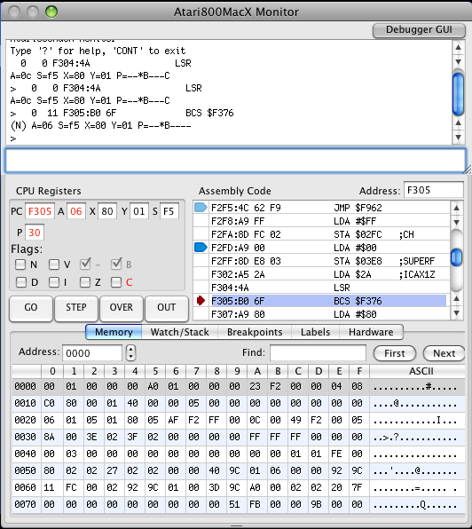

|
Atari800MacX
Help
Debug Monitor
|
The Debug Monitor on the Atari800MacX emulator allows you to debug
programs written for the Atari800 on the emulator. With it you
can single step programs, display memory, set breakpoints, and much,
much more. Starting with version 4.2, a graphical debugger has
been added.. To access the debugger, simply press F8 while the
emulator is running. The standard command line monitor and the
graphical debugger may be toggled on and off by the Debugger GUI button
on the top of the monitor windows. The following picture shows
the graphical debugger on (the command line monitor is still available
at the top of the graphical debugger). .The graphical debugger is
documented on the Graphical Debugger page.

Commands are typed in the input box at the bottom of the window, or on the command line in Fullscreen mode, and
are executed by pressing return. There is also command history,
so you can get to commands you have entered before with the up an down
arrows. To exit the monitor and continue your program, use the
command 'cont'. To get a list of all of the commands, and simple
help on them type 'help' or '?'. To quit the emulator from the
monitor screen, type 'quit'.
Whenever the monitor stops, it prints out the processor's current status. In the above example, the line is:
262 2 F2FD LDA $02FC ;CH (00FF) A=ff S=f5 X=80 Y=01 P=--*B--ZC
The meaning of the fields in this line are as follows:
262 Vertical scan position when processor
was stopped
2 Horizontal scan position when processor was
stopped
F2FD
Current value of the Program Counter
LDA $02FC Disassembly of the instruction at the PC location
;CH A symbol that is referenced by the instruction
($2FC in this
case)
(00FF)
Value at memory location referenced by instruction,
or in the case of
a conditional branch, a Y or N
which indicates if the branch will be taken. In
this case $02FC contains 00FF.
A=ff S=f5 X=80 Y=01 Current value of the other processor registers
P=--*B--ZC Current value of the processor flags.
The full set of commands and an explanation of their use follows. A parameter in brackets [] means that it is optional:
Monitor Control Commands
HELP
?
Print a list of all commands plus a brief description of each.
CONT
Exits the monitor and continues emulation
QUIT
Quit the emulator.
COLDSTART,
Execute a coldstart on the emulator, and leave the monitor.
WARMSTART,
Execute a warmstart on the emulator, and leave the monitor.
Processor Related Commands
SHOW
Shows the current state of processor registers. (The display is similar to the line displayed when the monitor is entered.
SETPC hexval
SETA hexval
SETS hexval
SETX hexval
SETY hexval
Set the processor register (PC, A, S, X, or Y) to the hexadecimal value specified by hexval.
SETN
SETV
SETD
SETI
SETZ
SETC
Set the specified flag (N,V,D,I,Z, or C).
CLRN
CLRV
CLRD
CLRI
CLRZ
CLRC
Clear the specified flag (N,V,D,I,Z, or C).
Memory Commands
C startaddr hexval...
Change memory starting at the hexadecimal address specified by startaddr with a series of bytes specified by hexval. For example, the command "C 0 00 01 02" would set the byte at address 0 to 0, address 1 to 1, and address 2 to 2.
D [startaddr]
Disassemble memory starting at hexadecimal address startaddr. If startaddr is not specified, then disassembly will continue from the last disassembled location.
F startaddr endaddr hexval
Fill memory starting at hexadecimal address startaddr and ending at address endaddr with the hex byte value specified by hexval.
M [startaddr]
Display memory starting at startaddr location. If startaddr is not specified, then memory dumping will continue from the last dumped location.
MM srcaddr destaddr bytecnt
Move bytecnt bytes of memory starting at address srcaddr to address destaddr. Memory move will handle overlapping regions correctly, reversing the order of copying as needed.
S startaddr endaddr hexval...
Search memory from startaddr to endaddr for a sequence of bytes specified by the hexadecminal values that follow.
STACK
Show the current stack contents.
Each JSR that has occurred will show it's calling location and the
called subroutine. Parameters that have been passed on the stack
are shown separately. The following is an example:
> stack
01F6 : 5E F2 F25C : JSR F2FD
01F8 : EE E6 E6EC : JSR E6F4
01FA : D2 E5 E5D0 : JSR E6EA
01FC : F6 BD BDF4 : JSR BD0F
01FE : 70 A0 A06E : JSR BDED
Convert memory from address startaddr to address endaddr to be considered by the emulator as ROM
RAM startaddr endaddr
Convert memory from address startaddr to address endaddr to be considered by the emulator as RAM
HARDWARE startaddr endaddr
Convert memory from address startaddr to address endaddr to be considered by the emulator as HARDWARE
BANK [banknum]
Switch current memory bank in use to banknum. If the parameter is omitted, then show the current bank number. (XE systems)
READ file startaddr nbytes
Read from the host file named file into memory starting at startaddr for nbytes bytes
READSEC drive sector count addr
Read count disk sectors starting at sector number sector from drive number drive into memory at address addr.
WRITE startaddr endaddr [file] [init>0] [run>0]
Write memory from startaddr to endaddr to a file. If the file parameter is specified, it is used as the filename, otherwise "memdump.dat" is used. The two other optional parameters init and run specify the initialization and run address used for a Atari binary loadable file. If either of init or run is specified, the Atari binary file header is written before the data.
WRITESEC drive# count addr
Write count disk sectors starting at sector number sector and drive number drive from memory starting at address addr.
SUM startaddr endaddr
Add the bytes of memory from startaddr to endaddr and display the result as a 32 bit sum.
Tracing and Execution Control Commands
TRON file
Turn tracing of instructions to a file on. The instruction trace is saved in a file named file.
Each line of the file represents the log of execution of one
instructions, and is similar to the line displayed when the monitor is
entered.
TROFF
Trace instruction tracing previously turned on with the TRON command off.
BREAK [addr]
Set a simple breakpoint at the address specified by addr. If addr is omitted, then display the currently set breakpoint, if any. Specifying a value of zero for addr will turn a previously enabled breakpoint off.
YBREAK [pos]
Set a scanline breakpoint at scanline pos. If pos is omitted, the current scanline breakpoint setting will be displayed. If pos
is -1, the breakpoint will be disabled. Specifying a value for
pos of a scanline + 1000 will cause that scanline to flicker when it is
displayed. For example, ybreak 1100 will cause scanline 100 to
flicker.
BRKHERE [on|off]
Sets BRK opcode behavior to stop in the monitor (on) or not (off).
MONHIST [on|off]
Turn monitor history keeping on/off.
Keeping history will slow down the emulation, so this allows the
debugger to only keep the history when the programmer needs it.
See the HISTORY command next.
HISTORY
H
Display disassembly of last 32 PC
address executed if monitor history keeping has been turned on with
MONHIST. Display is the same format as displayed when the monitor
is entered.
JUMPS
List last 32 locations of JMP/JSR
G
Single step one instruction and return to the monitor.
O
Step over the instruction, which is used to step over subroutine jumps.
R
Execute until a return instruction is executed and return to monitor.
B
Complex Breakpoint Commands.
Complex breakpoints function through a breakpoint table made up
of possibly many breakpoint conditions. The breakpoint checking
has been optimized to have as little impact on emulation execution
speed as possible, however all of the conditions may be checked each
emulated cycle, and the memory location conditions are especially
processor intensive. Each condition (entry) is explicitly anded
with the next, so that a breakpoint only fires if all of the entries
are true. However, the exception to this is the OR condition,
which allows you to have several chains of anded conditions ored
together. An example follows at the end of the subcommand
descriptions. A description of each subcommand follows:
B
Using the B command without a subcommand will print out the current breakpoint table.
B ?
This will print out a brief help summary on the complex breakpoint commands.
B C
This subcommand will clear all breakpoints in the table.
B D num
This subcommand deletes one entry in entry in the breakpoint table, whose number is num. Breakpoint table entries are numbered starting at 0.
B ON
The on subcommand with no parameters
turns the entire breakpoint table ON. Individual breakpoint table
entries must also be on for them to be active.
B ON num1 [num2 ...]
The on subcommand followed by
breakpoint table entry numbers turns the entries associated with those
numbers on. This allows the user to enter breakpoint entries, and
turn them on and off individually.
B OFF
The
off subcommand with no parameters turns the entire breakpoint table OFF.
This means that even if the individual breakpoint table entries are on, no breakpoints will fire.
B OFF num1 [num2 ...]
The
off subcommand followed by breakpoint table entry numbers turns the
entries associated with those numbers off. This allows the user to
enter breakpoint entries, and turn them on and off individually.
B [num] cond1 [cond2 ... ]
This subcommand is used to insert breakpoint table entries. If the option
num
parameter is specified, the entries will be inserted at that breakpoint
number, and existing entries will be shifted to higher numbers.
If
num is not
specified, or is higher than the highest entry plus one, the entry will
be added at the end of the table. A condition (
cond1,
cond2) is on of the following:
TYPE OPERATOR VALUE
This triplet of type operator value is entered with no spaces in between the three components.
Where TYPE is:
PC, A, X, Y, S, READ, WRITE, or ACCESS
Where OPERATOR is:
<, <=, =, ==, >, >=, !=. or <>
And finally VALUE, in hex, is what TYPE is compared to.
For example:
PC=1000 Will break when the program counter is 1000
A<45 Will break when the accumulator is less than 45
X>=4 Will break when the x register is greater than or equal to 4
Y!=2 Will break when the y register is not equal to 2
S==1F6 Will break when the s register is equal to 1f6
READ<1000 Will break when a memory address less than 1000 is read
WRITE>2000 Will break when a memory address greater than 2000 is written.
ACCESS==200 Will break when memory address 200 is read or written
MEM ADDR OPERATOR VALUE
Where MEM is a constant string 'MEM'.
Where ADDR is the memory address, in hex, whose contents is to be compared.
Where OPERATOR is:
<, <=, =, ==, >, >=, !=. or <>
And finally VALUE is what the contents of the memory, in hex, is compared to.
For example:
MEM100=45 Will break when the program counter is 1000
MEM1000>78 Will break when the accumulator is less than 45
SETN
SETV
SETB
SETD
SETI
SETZ
SETC
The condition breaks when the processor flag specified is set.
CLRN
CLRV
CLRB
CLRD
CLRI
CLRZ
CLRC
The condition breaks when the processor flag specified is clear.
OR
The OR condition is a special case and
indicates that the break will fire when the conditions prior to it in
the breakpoint table occur or the conditions after it occur. There can be multiple OR's in the breakpoint table.
Finally, here are some examples of the B commands
B PC>=203f A<3a OR PC=3a7f X<>0
Creates a breakpoint table with 5
entries. Note that ands are implied between conditions, so this
table says the breakpoint will fire if condition1 AND condition2 occur
OR condition4 AND condition5 occur.
B 2
MEM1000=4a
Adds a new entry on position 2
B D
1
Deletes entry on position 1
B OR
SETD
Adds 2 new entries at the end of the table
Atari Hardware Register Commands
ANTIC
GTIA
PIA
POKEY
Display hardware registers for a specific chip.
DLIST [startaddr]
Show the Display List starting at address startaddr. If startaddr is not specified, it will show the display list continuing from where it was last displayed.
DLIST CURR
Show the Display List from the currently in use location.
Assembler Commands
A [startaddr]
Start simple assembler, with assembled code being stored at startaddr. The assembler is exited by entering a blank line.
LABELS OFF
Turn all labels off, both builtin and any loaded by the user.
LABELS LOAD filename
Load user labels from an assembler
output file. This version turns off builtin labels, if you want
builtins enabled, use "LABELS ADD" insead. In versions 4.2 and
greater is does not clear the current user labels, but allows the user
to merge two label files.
LABELS ADD filename
Load user labels from an assembler output file. This turns turn on builtin
labels. In versions 4.2 and greater is does not clear the current user
labels, but allows the user to merge two label files.
LABELS SET name value
Add a user label with the given name and value.
LABELS LIST
List user defined labels.
LABELS VALUE
Lookup label value given name.
LABELS NAME
Lookup label name given value.